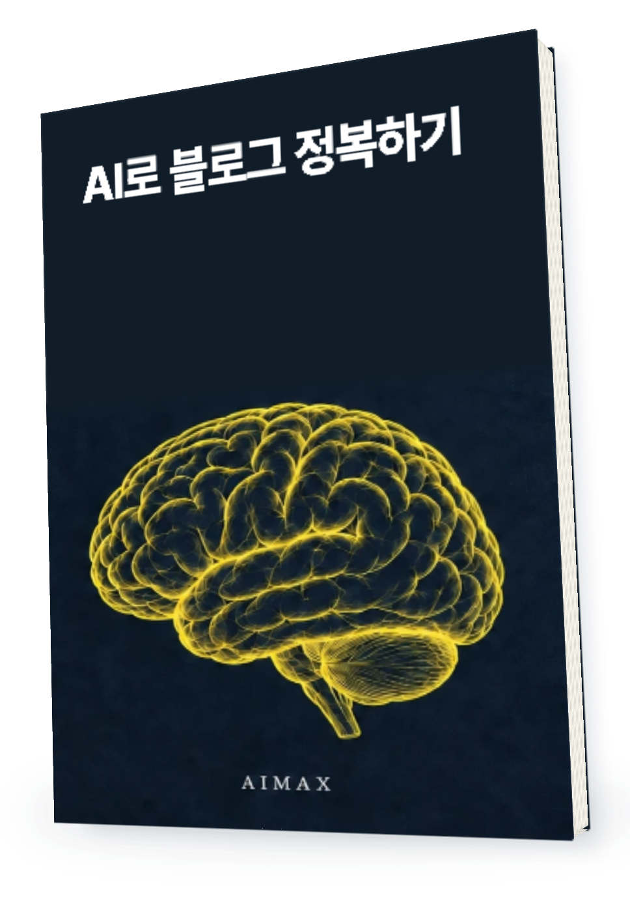
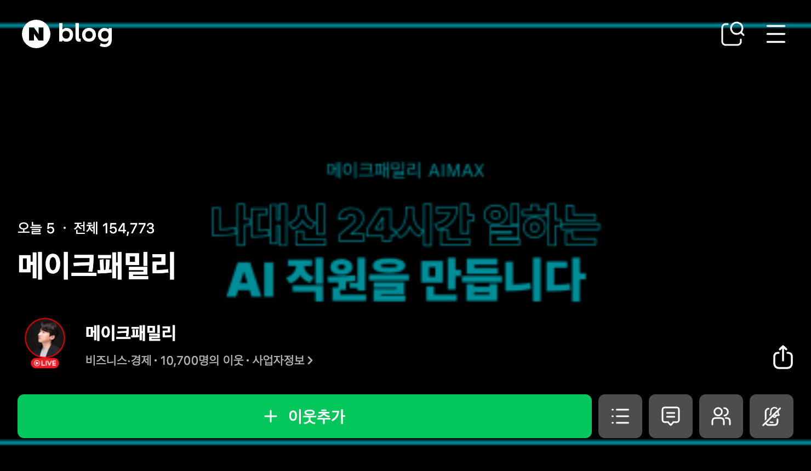
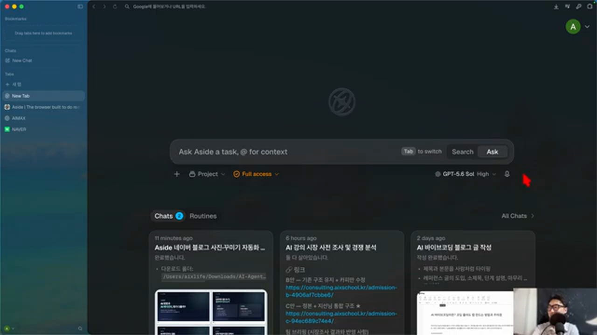
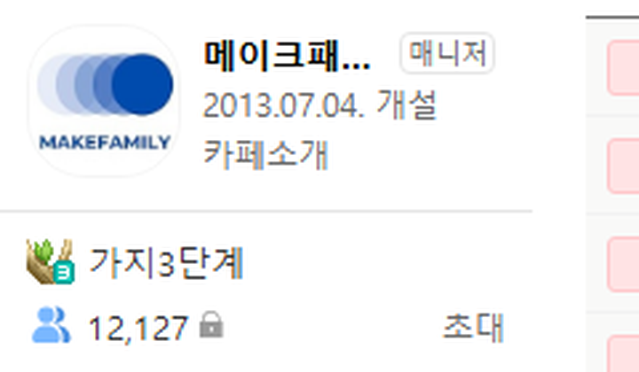

AI가 써준 글을
아직도 직접 붙여 넣는다면
블로그 작성도

AI로 블로그 정복하기
ASIDE로 블로그 자동화 하는 법
자료 조사부터 초안 작성
네이버 에디터 입력까지
실제 작업 화면으로 따라갑니다
지금 책으로 확인하세요
네이버 공개 프로필에 표시된 이웃
블로그를 운영하는 곳에서

2026.09.30 공개 프로필 기준
메이크패밀리 블로그의 운영 규모이며
ASIDE 사용으로 늘어난 이웃 수를 뜻하지 않습니다
블로그에 글이 들어가는
라이브에서 직접 실행한
ASIDE 블로그 작성 장면

2026.09.22 라이브 · 00:34:45–00:35:02
실제 속도 17초 반복 재생
AI가 글을 써줬는데
왜 내 할 일은
그대로일까요
초안을 받아도 블로그 에디터에서는
내가 다시 손을 움직이고 있죠
글은 AI가 쓰고
편집은 내가 하고
에디터 작업까지
제목 · 이미지 · 정렬 · 임시 저장
책의 실습 범위를 비교한 설명입니다
AI를 가르쳐 온 경험을
한 편의 실습으로
강의 경험
교육 실적

저자의 교육 실적으로 이 전자책 구매자의 성과와 구분됩니다
처음 켠 화면에서
무엇부터 할지
ASIDE와 AI 계정을 준비하고
블로그 작업을 시작할 화면을 확인합니다

무슨 글인지
어떤 모양인지까지
주제만 적고 기다리지 마세요
에디터에 남길 모양도 함께 적습니다
참고 자료를 읽고
블로그 초안을 작성해 주세요
제목과 본문을 구분하고
사진 위치와 정렬을 맞춰 주세요
에디터에 입력한 뒤
임시 저장에서 멈춰 주세요

지시문은 책의 방법을 정리한 예시이며
에디터 캡처의 실행 지시문을 그대로 옮긴 것은 아닙니다
“끝났어요”라는 말보다
실제 화면을 보세요
글은 들어갔는지 사진은 빠지지 않았는지
태그가 엉뚱한 곳에 들어가진 않았는지

틀린 곳만
콕 집어주세요
제목과 본문이 같은 크기로 들어갔어요
제목만 크게 바꾸고 정렬을 확인해 주세요
수정 후 임시 저장에서 멈춰 주세요
시작부터 재작업까지
4개 챕터에 담았습니다
블로그를 쓰기 전에 알아둘 것
브라우저 에이전트의 역할
맡길 작업과 직접 확인할 작업
ASIDE 준비와 블로그 연결
AI 계정 준비부터 연결까지
사용 한도가 다를 때 확인할 곳
블로그 글 한 편 만들기
참고 글 분석 · 복사해서 쓸 프롬프트
에디터 입력과 진행 화면 확인
검수하고 실패한 부분 다시 시키기
누락된 서식 수정 · 중단된 작업 이어가기
임시 저장 후 직접 발행하기
AI가 쓴 글을 매번 에디터로 옮기는 분
지시를 어디까지 적어야 할지 막막한 분
완료 보고와 실제 화면이 달라 당황했던 분
실제 사업을 운영하며
쌓아 온 기록
매년 쌓아온
사업의 기록.
(주)메이크프렌즈 연도별 매출
2021~2023년 월별 원장 합계 · 억원 단위 반올림
운영사의 사업 실적으로
ASIDE 사용 성과와 구분됩니다
메이크패밀리에서도
배움을 이어갑니다

2026.09.10 카페정보 화면 기준 · 네이버 카페 westudyssat

2026.09.10 라운지 공개 첫 화면에 표시된 인원
자주 묻는 질문
Q알아서 발행까지 해 주나요?
이 책은 임시 저장 후 사람이 확인하는 흐름을 안내합니다. 최종 발행은 직접 확인한 뒤 진행하세요.
QASIDE 이용권도 포함인가요?
PDF 전자책 상품입니다. ASIDE 이용권이나 별도 AI 서비스 구독은 포함하지 않습니다.
Q책과 같은 화면이 나오나요?
ASIDE와 연결 서비스의 화면, 연결 가능 여부와 사용 한도는 바뀔 수 있습니다. 책 속 화면과 다르면 현재 사용 환경을 확인해 주세요.
Q구매한 책은 어디서 받나요?
주문 이메일로 PDF를 받습니다. 같은 이메일로 라운지에서도 다시 꺼내볼 수 있습니다.
다음 블로그 글은
에디터까지 맡겨보세요
주문 이메일로 PDF 수령
같은 이메일로 라운지에서 다시 보기